How to run HCK Motion Sensor Tests
Introduction
This document is a guide or a supplement to the existing HCK 2.0 documentation and tools for sensors OEMs, ODMs and IHVs. It provides some tips and tricks that a partner can leverage to run the tests. Partners are free to use other implementations to test their device-- this is just a singular reference. Items identified in this document are optional (you can run the tests without these pieces of hardware). They have simply been used to help demonstrate the orientations for the purposes of this document.
This document assumes that the HCK 2.0 or greater is being used to test a slate form factor system (requiring motion and light sensors). Other form factors (e.g. laptops) are beyond the scope of this document. Although the tests do validate other form factor systems, the details below are primarily designed to optimize testing on slate form factor systems.
This document describes the following tests:
-
Verify Sensor Orientation – 3D Accelerometer
-
Gyroscope Sensor Test
-
Verify Sensor Orientation – 3D Compass
-
Verify Sensor Orientation – Inclinometer
-
Verify Advanced Orientation Sensors
The motion sensor tests are required for the following:
-
Sensor device certification
-
System certification
The motivation to have identical tests in both of these areas is to ensure that IHVs provide passing hardware, firmware, and drivers to PC manufacturers and that PC manufacturers integrate the parts correctly onto their systems to provide accurate and reliable sensor readings.
Test Purpose
The primary purpose of the motion sensor tests is to assist hardware partners in validating that their sensors are correctly orientated in the system and that they meet the WHCK required accuracy requirements. These tests are not designed to provide full test coverage or to take advantage of specialized equipment that can more accurately determine the inaccuracies of individual sensors. It is recommended that PC manufacturers to test their systems with additional applications and quality assurance tests after passing WHCK (e.g. test with production-quality Windows 8 apps).
Recommended Testing Sequence
Microsoft recommends that you run the tests in the order that is listed in the following table. By testing the accelerometer and gyroscope first, you can ensure that these basic sensors are working correctly. The next set of tests validates the data from Compass, Inclinometer, and Orientation sensors that are derived by combining data of multiple sensors. It is also recommended not to attempt to execute subsequent tests until all previous tests are passing.
| Sensor | Test Name | Dependencies |
|---|---|---|
|
Accelerometer |
Verify Sensor Orientation – 3D Accelerometer |
n/a |
|
Gyroscope |
Gyroscope Sensor Test
|
n/a |
|
Compass |
Verify Sensor Orientation – 3D Compass |
Accelerometer, Gyro, Compass |
|
Inclinometer |
Verify Sensor Orientation – Inclinometer |
Accelerometer, Gyro, Compass |
|
Fusion/Orientation Sensors (Rotation Matrix / Quaternion) |
Verify Advanced Orientation Sensors |
Accelerometer, Gyro, Compass |
Suggested Test Equipment
For the purposes of this document, the following hardware items were utilized to help run the WHCK tests. While these devices are not required for WHCK, they may assist the validation engineer get through the tests more easily if used.
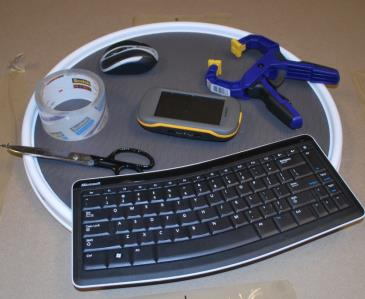
Figure 1 Suggested Test Equipment
-
Bluetooth keyboard
-
Bluetooth mouse
-
Compass / GPS
-
Clamp and tape to hold system
-
Revolving turn-table (for example, a Lazy Susan)
-
Sensor Diagnostic Tool
These additional devices help test a slate form factor system (where accelerometer, gyro, compass, inclinometer and orientation sensors are required). For other configurations, these tools may not apply. The remainder of this document will only focus on slate and not other form factors.
The sensor diagnostic tool (sensordiagnostictool.exe available in the WDK) is useful for debugging test failures. This tool will show the data being returned in real-time from the various motion sensors which can be compared to the expected results.
Verify Sensor Orientation – 3D Accelerometer
Test Scope: This test verifies the accelerometer is correctly orientated in the system. The tests have an error tolerance of +/- 0.1 G.
Prerequisites before running this test:
-
Manually verify that screen autorotation works as expected.
-
Use SDT and validate that the sensors do not show new data events when sitting stationary.
Once these simple prerequisites pass, proceed to run the WHCK test. Should you run into errors with the tests, ensure that the device is in the correct orientation as per this document. PC manufacturers with questions should first contact their sensor manufacturer (IHV) to identify how they passed the WHCK tests before contacting Microsoft for assistance with WHCK tests.
Accelerometer Test 1
Hold the device perpendicular to a flat and level surface with the Windows button on the bottom.
Expected values:
|
SENSOR_DATA_TYPE_ACCELERATION_X_G |
0 |
|
SENSOR_DATA_TYPE_ACCELERATION_Y_G |
-1 |
|
SENSOR_DATA_TYPE_ACCELERATION_Z_G |
0 |
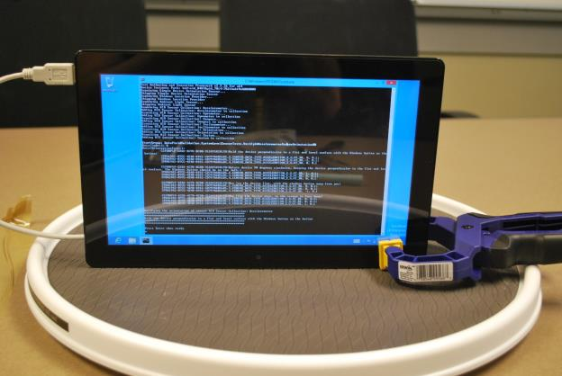
Figure 2 Accelerometer Test 1
Accelerometer Test 2
Rotate device 90 degrees clockwise, keeping the device perpendicular to the flat and level surface. The Windows button should be on the left.
Expected values:
|
SENSOR_DATA_TYPE_ACCELERATION_X_G |
1 |
|
SENSOR_DATA_TYPE_ACCELERATION_Y_G |
0 |
|
SENSOR_DATA_TYPE_ACCELERATION_Z_G |
0 |
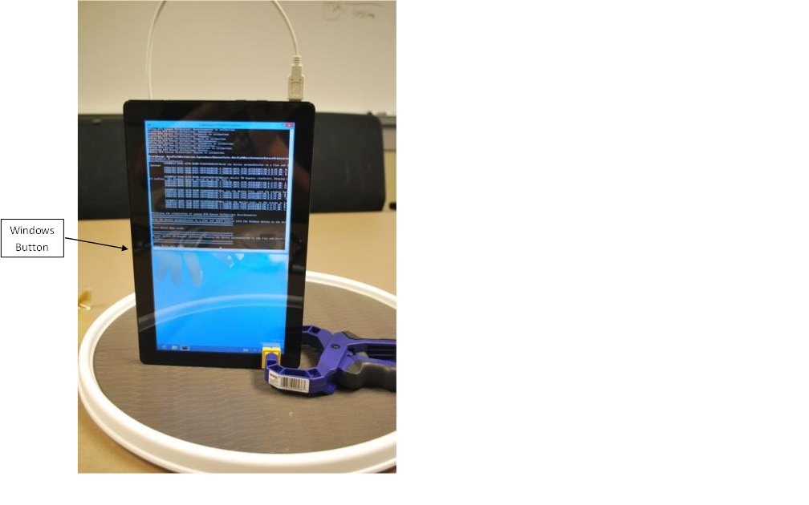
Figure 3 Accelerometer Test 2
Accelerometer Test 3
Now lay the device flat, with the windows button away from you.
Expected values:
|
SENSOR_DATA_TYPE_ACCELERATION_X_G |
0 |
|
SENSOR_DATA_TYPE_ACCELERATION_Y_G |
0 |
|
SENSOR_DATA_TYPE_ACCELERATION_Z_G |
-1 |
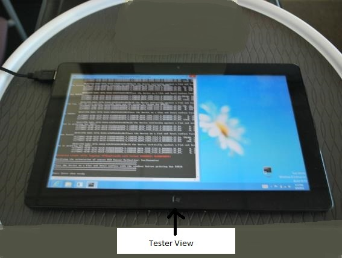
Figure 4 Accelerometer Test 3
Accelerometer Test 4
Now flip the device over, so the screen is face down.
Expected values:
|
SENSOR_DATA_TYPE_ACCELERATION_X_G |
0 |
|
SENSOR_DATA_TYPE_ACCELERATION_Y_G |
0 |
|
SENSOR_DATA_TYPE_ACCELERATION_Z_G |
1 |
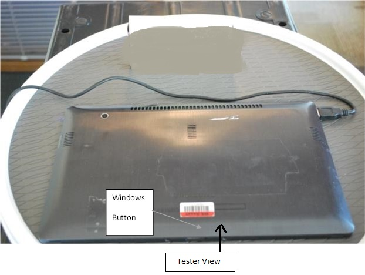
Figure 5 Accelerometer Test 4
Gyroscope Sensor Test
Test Scope:
Gyroscopes generally emit noise on the magnitude of +/- 2 degrees per second. Prior to running the Gyroscope verification tests, testers should use the sensor diagnostic tool to validate the gyroscope sensor is not generating values greater than 2 degrees per second when the system is stationary.
Prerequisites before running this test:
-
Accelerometer tests pass.
-
Use SDT, and validate that the sensors do not return data when sitting stationary on a flat surface.
If the gyroscope sensor is generating excessive noise, testers should work with the sensor manufacturer to understand and fix the source of the noise.
Gyro tests expect to receive an angular velocity of greater than 40 degrees per second on the axis being rotated and less than 15 degrees per second on the stationary axes. To achieve passing results, testers will likely find that the system can be rotated on a turntable to keep the other two axes stationary. Note the system should also be centered on the turntable to prevent movement on other axes from detecting rotation.
Gyro Test 1
Lay the device flat with the screen up. Rotate the device clockwise.
Expected values during rotation:
|
SENSOR_DATA_TYPE_ANGULAR_ACCELERATION_X_DEGREES_PER_SECOND_SQUARED |
< 15 |
|
SENSOR_DATA_TYPE_ANGULAR_ACCELERATION_Y_DEGREES_PER_SECOND_SQUARED |
< 15 |
|
SENSOR_DATA_TYPE_ANGULAR_ACCELERATION_Z_DEGREES_PER_SECOND_SQUARED |
< -40 |
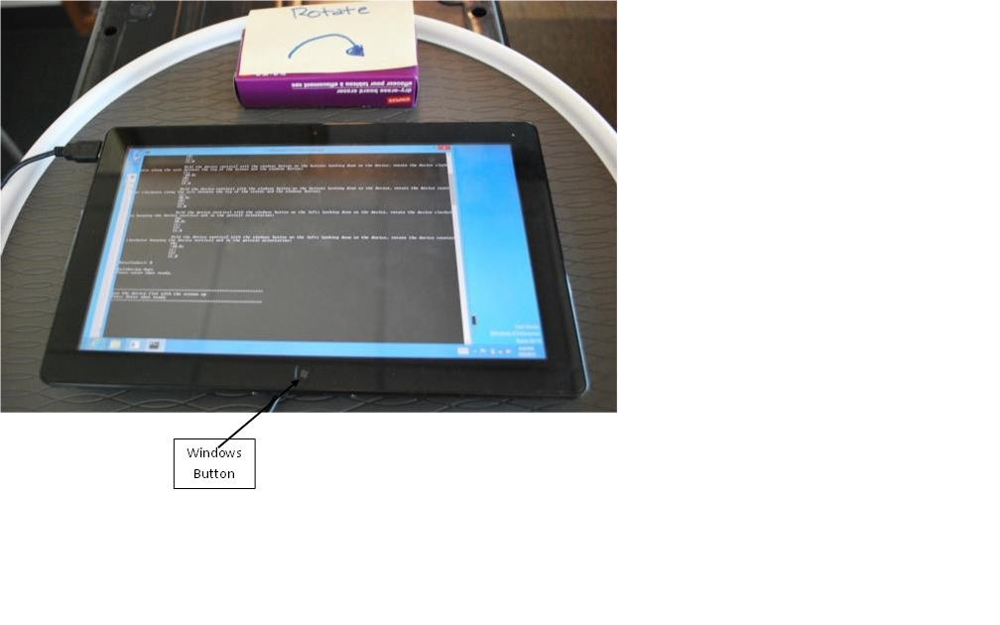
Figure 6 Gyro Test 1
Gyro Test 2
Lay the device flat with the screen up. Rotate the device counterclockwise.
Expected Values during rotation:
|
SENSOR_DATA_TYPE_ANGULAR_ACCELERATION_X_DEGREES_PER_SECOND_SQUARED |
< 15 |
|
SENSOR_DATA_TYPE_ANGULAR_ACCELERATION_Y_DEGREES_PER_SECOND_SQUARED |
< 15 |
|
SENSOR_DATA_TYPE_ANGULAR_ACCELERATION_Z_DEGREES_PER_SECOND_SQUARED |
> 40 |
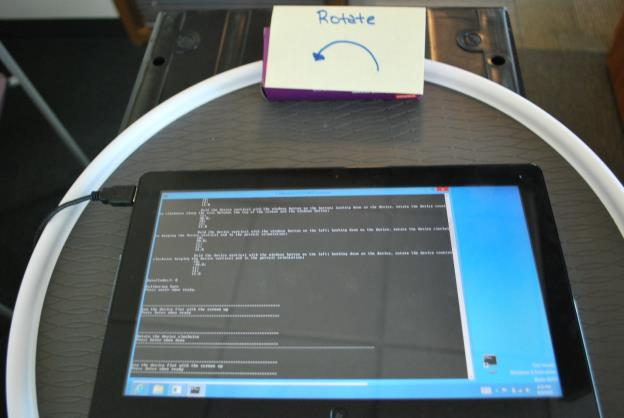
Figure 7 Gyro Test 2
Gyro Test 3
Hold the device vertical with the windows button on the bottom. Looking down on the device, rotate the device clockwise along the axis between the top of the screen and the windows button.
Expected values during rotation:
|
SENSOR_DATA_TYPE_ANGULAR_ACCELERATION_X_DEGREES_PER_SECOND_SQUARED |
< 15 |
|
SENSOR_DATA_TYPE_ANGULAR_ACCELERATION_Y_DEGREES_PER_SECOND_SQUARED |
< -40 |
|
SENSOR_DATA_TYPE_ANGULAR_ACCELERATION_Z_DEGREES_PER_SECOND_SQUARED |
< 15 |
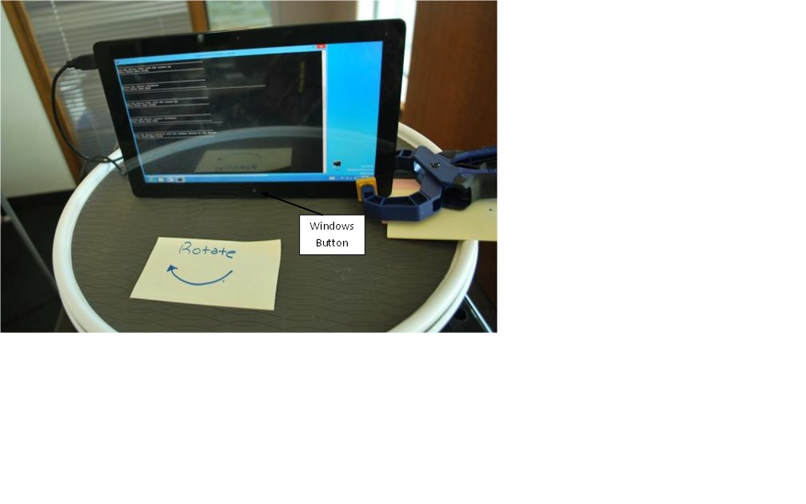
Figure 8 Gyro Test 3
Gyro Test 4
Hold the device vertical with the windows button on the bottom. Looking down on the device, rotate the device counterclockwise along the axis between the top of the screen and the windows button.
Expected values during rotation:
|
SENSOR_DATA_TYPE_ANGULAR_ACCELERATION_X_DEGREES_PER_SECOND_SQUARED |
< 15 |
|
SENSOR_DATA_TYPE_ANGULAR_ACCELERATION_Y_DEGREES_PER_SECOND_SQUARED |
> 40 |
|
SENSOR_DATA_TYPE_ANGULAR_ACCELERATION_Z_DEGREES_PER_SECOND_SQUARED |
< 15 |
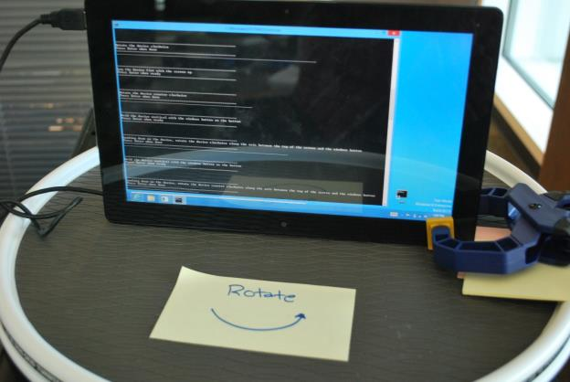
Figure 9 Gyro Test 4
Gyro Test 5
Hold the device vertical with the windows button on the left. Looking down on the device, rotate the device clockwise keeping the device vertical and in the portrait orientation.
Expected values during rotation:
|
SENSOR_DATA_TYPE_ANGULAR_ACCELERATION_X_DEGREES_PER_SECOND_SQUARED |
> 40 |
|
SENSOR_DATA_TYPE_ANGULAR_ACCELERATION_Y_DEGREES_PER_SECOND_SQUARED |
< 15 |
|
SENSOR_DATA_TYPE_ANGULAR_ACCELERATION_Z_DEGREES_PER_SECOND_SQUARED |
< 15 |
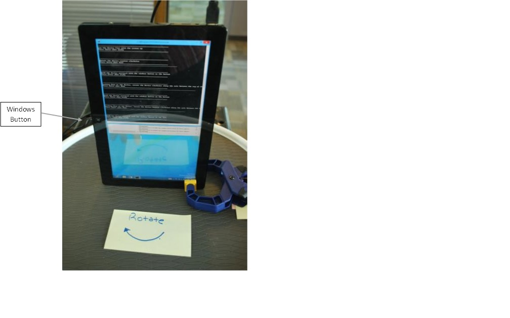
Figure 10 Gyro Test 5
Gyro Test 6
Hold the device vertical with the windows button on the left. Looking down on the device, rotate the device counterclockwise keeping the device vertical and in the portrait orientation.
Expected values during rotation:
|
SENSOR_DATA_TYPE_ANGULAR_ACCELERATION_X_DEGREES_PER_SECOND_SQUARED |
<-40 |
|
SENSOR_DATA_TYPE_ANGULAR_ACCELERATION_Y_DEGREES_PER_SECOND_SQUARED |
< 15 |
|
SENSOR_DATA_TYPE_ANGULAR_ACCELERATION_Z_DEGREES_PER_SECOND_SQUARED |
< 15 |
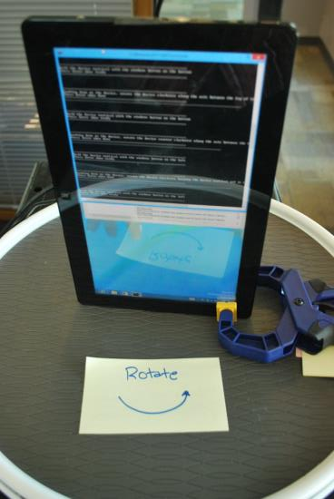
Figure 11 Gyro Test 6
Verify Sensor Orientation – 3D Compass
Most compass implementations use data from both the 3D magnetometer and the gyro to calculate the current direction the user is facing relative to the magnetic north pole. Some implementations also use data from the accelerometer. Therefore, if the gyroscope or accelerometer sensor is not functioning properly, testers should expect to see the compass return incorrect headings.
Since the earth’s magnetic force is relatively weak, the magnetometer sensors will often be subject to interference from other components inside the system. If the magnetometers are not adequately isolated from sources of electromagnetic interference such as antennas, power lines, or other components that are composed of materials such as iron that interfere with magnetic reception, testers will find that the compass will return incorrect headings. Please refer to the Integrating Motion and Orientation Sensors whitepaper for guidance on correct magnetometer placement and best practices.
The user is strongly encouraged to stand holding the system at various angles and rotate themselves so they end up facing different directions. Regardless of the angle the system is being held, or landscape / portrait orientation, the compass should always return the heading that is relative to the direction that the user is facing. Note that sensor diagnostic tool can be used to display the heading value from the compass sensor. If testers find out that the compass is returning incorrect or inconsistent results, please work with the magnetometer sensor vendor to determine if the error is a result of interference or potentially an incorrect sensor fusion algorithm.
The compass tests in the WHCK validate that the compass returns expected values when the system is held at different directions and orientations. The compass tests allow for an error tolerance of +/- 10 degrees. Testers should use a reference compass to determine the direction of magnetic north prior to starting the compass test.
Compass Test 1
Lay the device on a flat surface with the Windows button pointing due south.
The compass should return a heading near 0 degrees.
|
|
|---|
| Ignore the logging exception text. This will not cause a failure to be logged. |
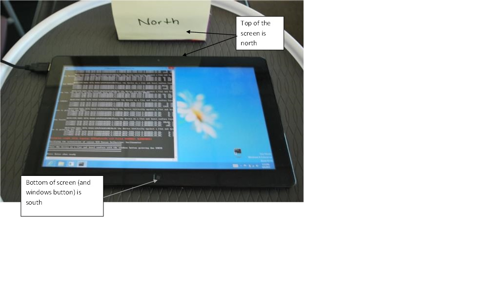
Figure 12 Compass Test 1
Compass Test 2
Now hold the device vertical with the Windows button on the bottom, with the screen towards you. Aim the Windows button due north.
The compass should return a heading near 0 degrees
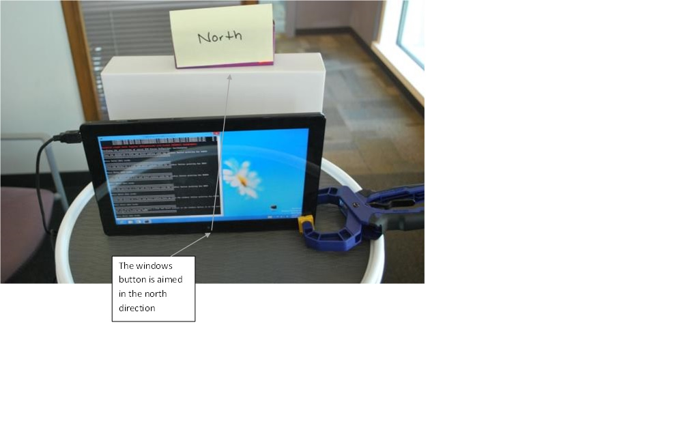
Figure 13 Compass Test 2
Compass Test 3
Now lay the device flat, screen down with the windows button pointing due south.
The compass should return a heading near 0 degrees.
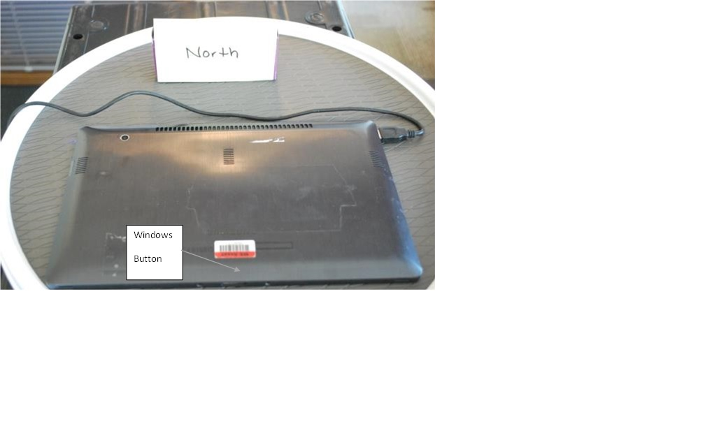
Figure 14 Compass Test 3
Compass Test 4
Now rotate the screen 90 degrees clockwise so the Windows button is pointing due West.
The compass should return a heading near 90 degrees.
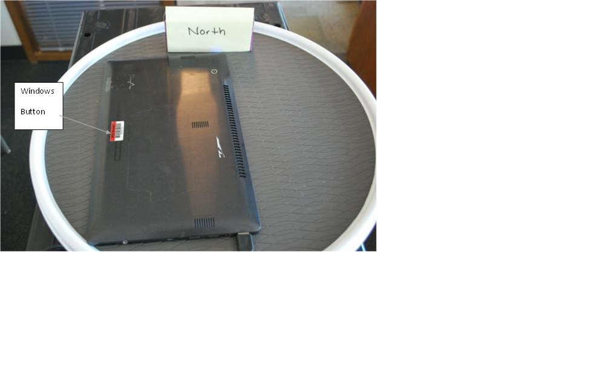
Figure 15 Compass Test 4
Compass Test 5
Rotate the screen another 90 degrees clockwise so the Windows button is pointing due North.
The compass should return a heading near 180 degrees.
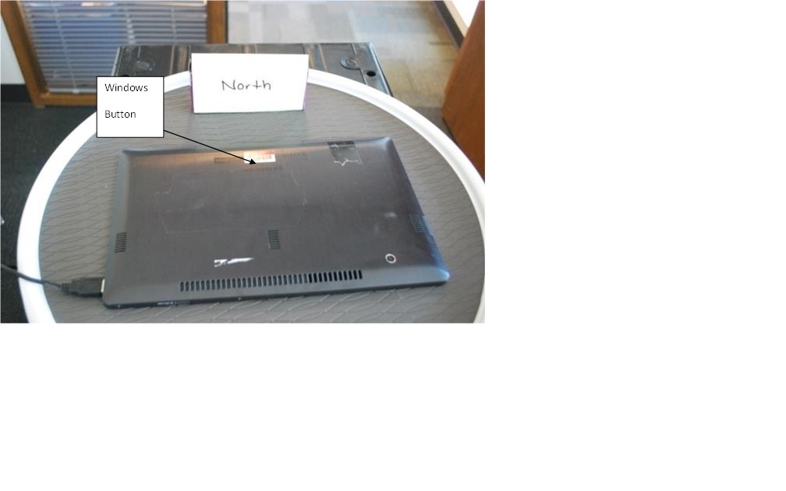
Figure 16 Compass Test 5
Compass Test 6
Rotate the screen another 90 degrees clockwise so the Windows button is pointing due East.
The compass should return a value near 270 degrees.
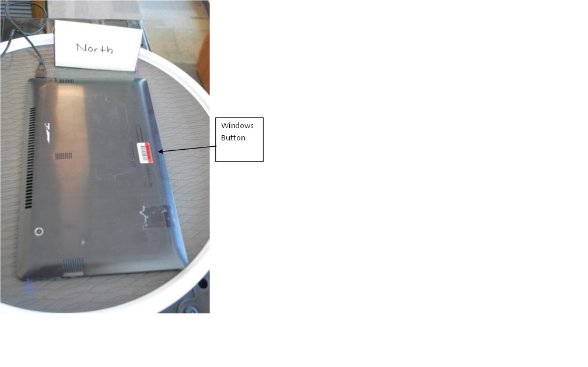
Figure 17 Compass Test 6
Verify Sensor Orientation – Inclinometer
Based on the guidance in the Integrating Motion and Orientation Sensors whitepaper, the inclinometer implementation could use data from the accelerometer, gyroscope and compass to determine the Euler angle values.
The tests will allow for angle errors of +/- 10 degrees.
 Important Important |
|---|
| Please refer to the Validation of Euler Angles section of the Integrating Motion and Orientation Sensors whitepaper for the expected angles for each of the inclinometer tests. |
Inclinometer Test 1
Place the device on a flat and level surface with the windows button pointing due SOUTH.
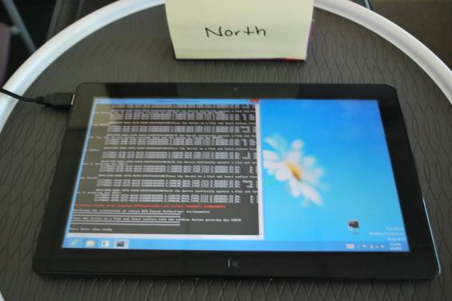
Figure 18 Inclinometer Test 1
Inclinometer Test 2
Place the device on a flat and level surface with the windows button pointing due EAST.
Figure 19 Inclinometer Test 2
Inclinometer Test 3
Place the device on a flat and level surface with the windows button pointing due NORTH.
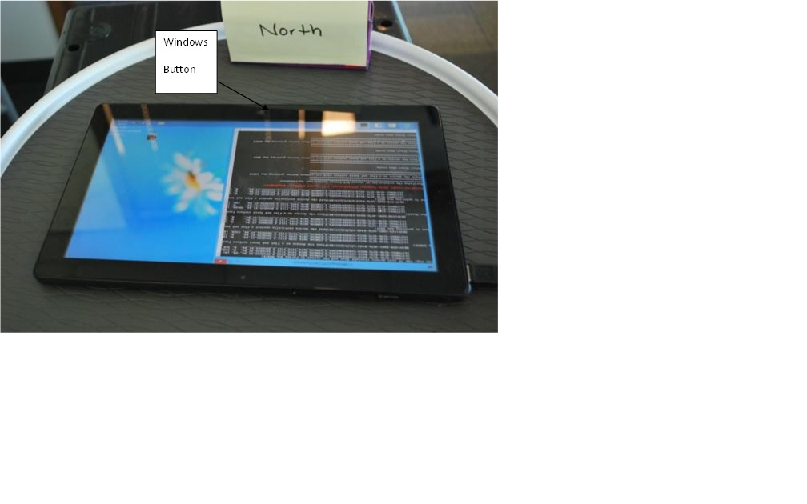
Figure 20 Inclinometer Test 3
Inclinometer Test 4
Place the device on a flat and level surface with the windows button pointing due WEST.
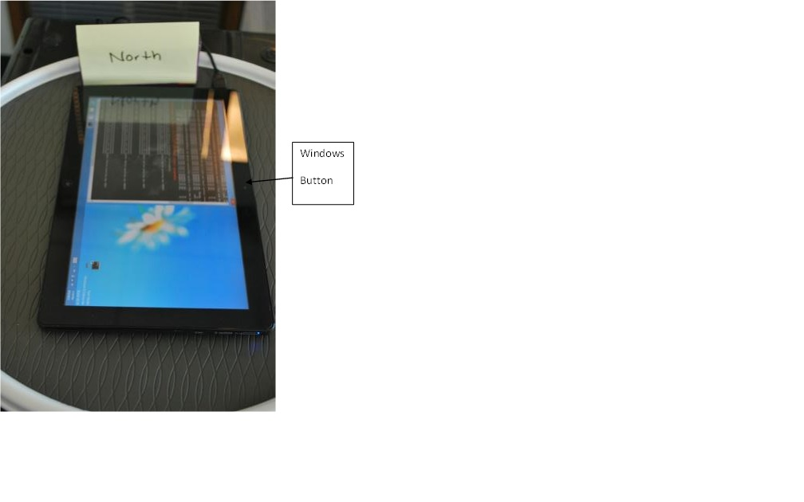
Figure 21 Inclinometer Test 4
Inclinometer Test 5
Place the device on a flat and level surface face up with the windows button pointing due SOUTH.
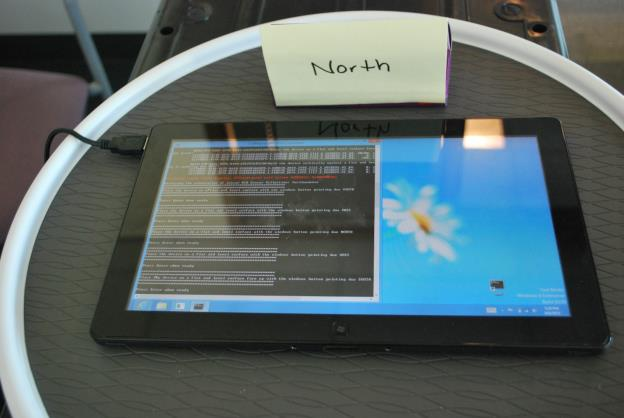
Figure 22 Inclinometer Test 5
Inclinometer Test 6
Hold the device vertically against a flat and level surface so the windows button is on the bottom, the +Y axis points straight up and the screen is facing due SOUTH.
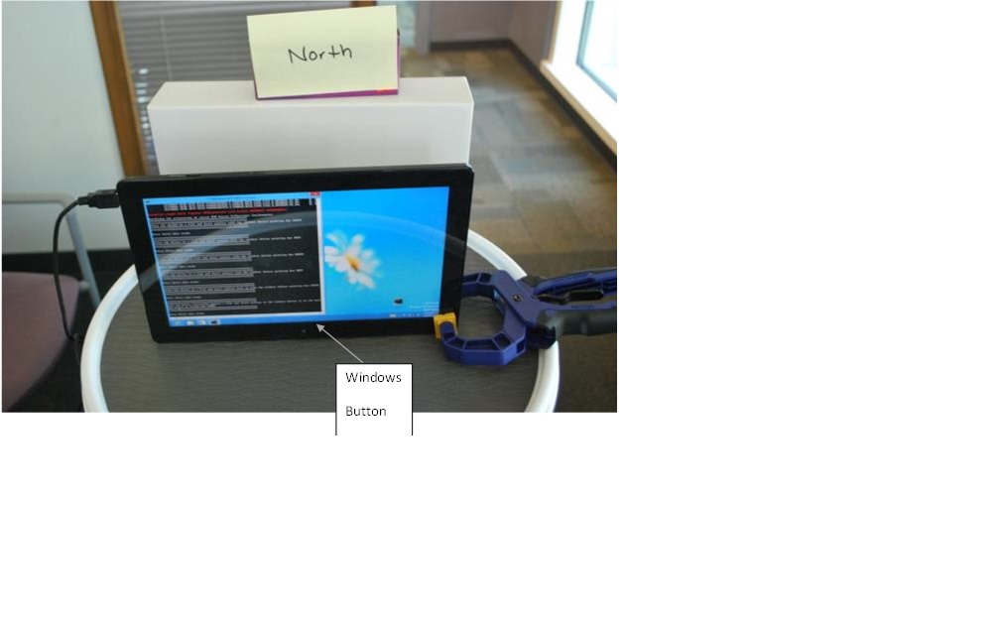
Figure 23 Inclinometer Test 6
Inclinometer Test 7
Place the device on a flat and level surface face down so the windows button is pointing due NORTH.
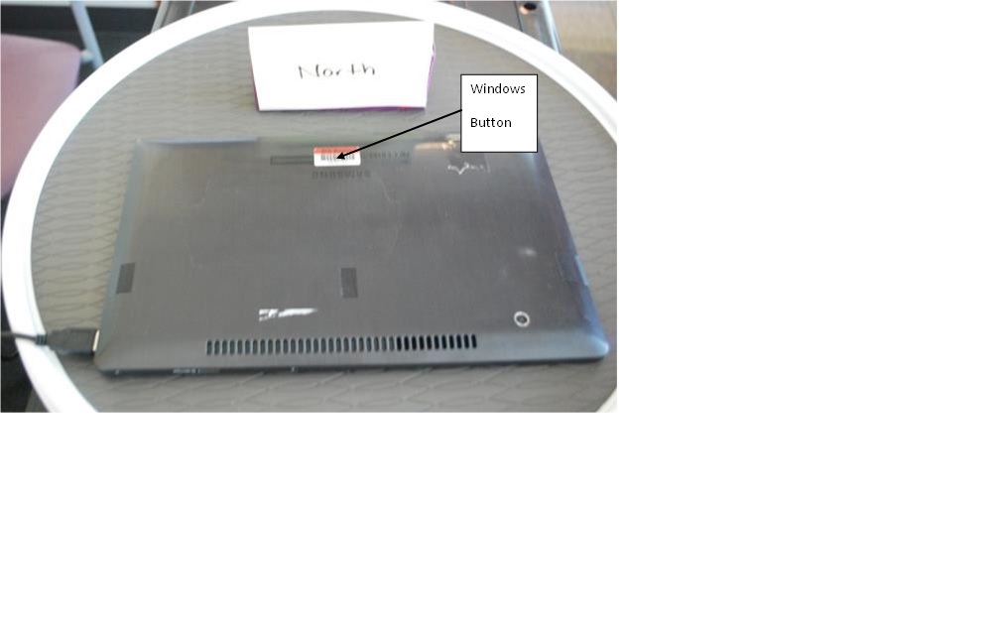
Figure 24 Inclinometer Test 7
Inclinometer Test 8
Hold the device vertically against a flat and level surface so the windows button is on the top, the +Y axis points straight down and the screen is facing due NORTH.

Figure 25 Inclinometer Test 8
Inclinometer Test 9
Place the device on a flat and level surface face up with the windows button pointing due SOUTH.
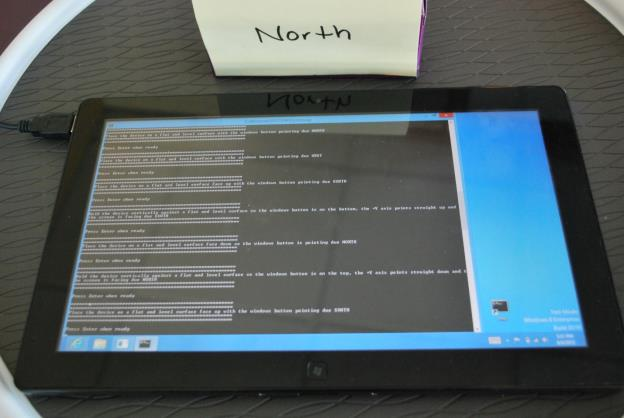
Figure 26 Inclinometer Test 9
Inclinometer Test 10
Hold the device vertically against a flat and level surface on its right side so the screen is pointing due EAST.
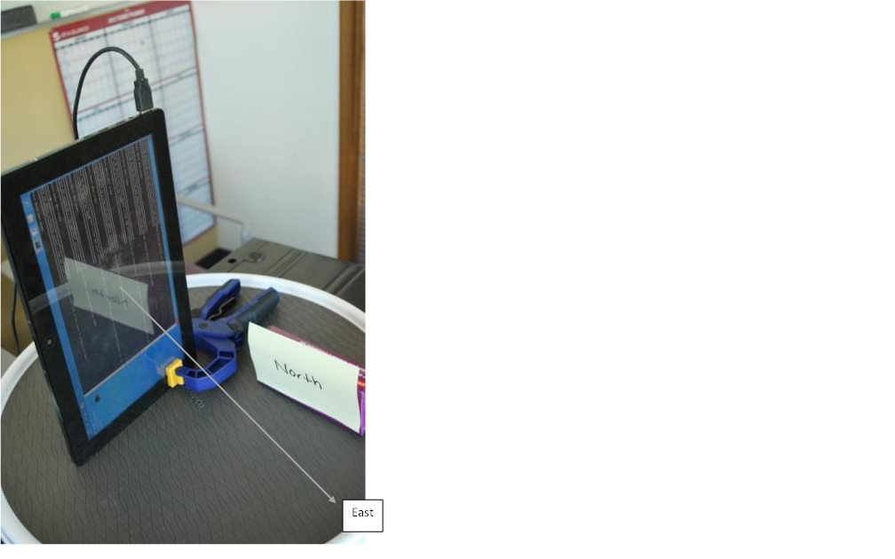
Figure 27 Inclinometer Test 10
Inclinometer Test 11
Place the device on a flat and level surface face down with the windows button pointing due SOUTH.
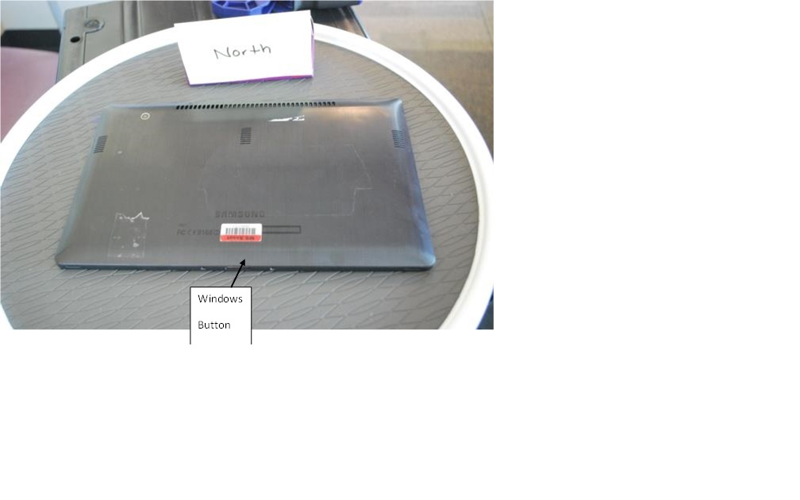
Figure 28 Inclinometer Test 11
Inclinometer Test 12
Hold the device vertically against a flat and level surface on its left side so the screen is pointing due WEST.
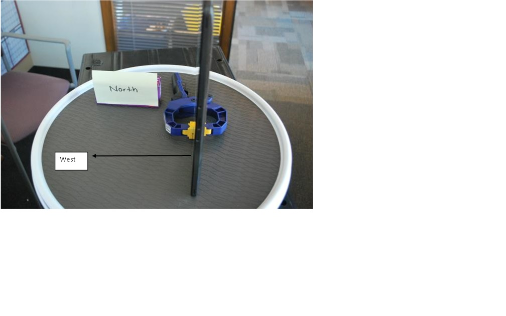
Figure 29 Inclinometer Test 12
Verify Advanced Orientation Sensors
Most rotation matrix and quaternion implementations will use data derived from both the accelerometer and compass to determine rotation matrix and quaternion values. Testers are recommended to first validate accelerometer and compass values before attempting to run the advanced orientation tests.
The tests use dot products to compute the delta between the expected vector and the vector retrieved from the advanced orientation sensors. The tests allow for a delta of up to 15 degrees. If testers find that the sensor is returning different values than what the test expects then the orientation fusion algorithm should be reviewed to see that it produces consistent results with the values given in the Integrating Motion and Orientation Sensors whitepaper.
|
Important |
|---|
| Please refer to the Validation of Euler Angles section of the Integrating Motion and Orientation Sensors whitepaper for the expected quaternion and rotation matrix values. |
Advanced Orientation Sensor Test 1
Place device on a flat level surface, screen up with the windows button pointing due SOUTH.

Figure 30 Advanced Orientation Sensor Test 1
Advanced Orientation Sensor Test 2
Place device on a flat level surface, screen up with the windows button pointing due EAST.
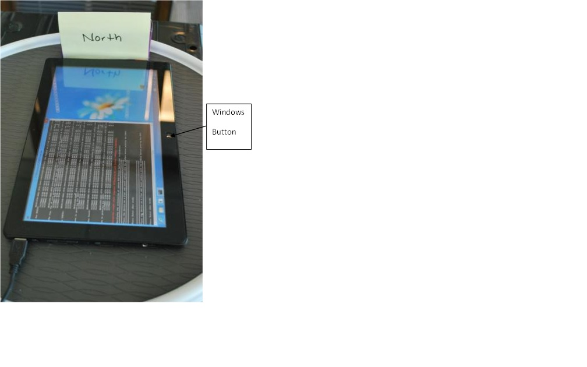
Figure 31 Advanced Orientation Sensor Test 2
Advanced Orientation Sensor Test 3
Place device on a flat level surface, screen up with the windows button pointing due NORTH.
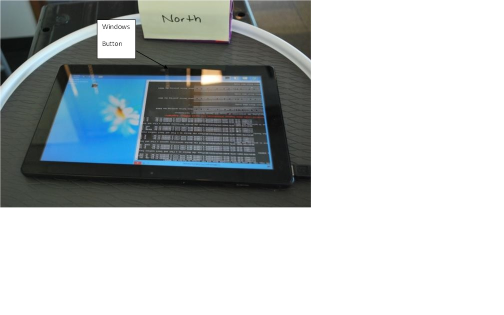
Figure 32 Advanced Orientation Sensor Test 3
Advanced Orientation Sensor Test 4
Place device on a flat level surface, screen up with the windows button pointing due WEST.
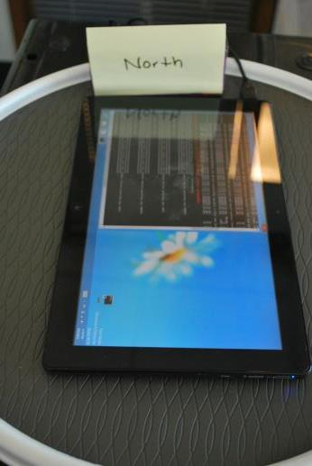
Figure 33 Advanced Orientation Sensor Test 4
Advanced Orientation Sensor Test 5
Place device on a flat level surface, screen up with the windows button pointing due SOUTH.
Figure 34 Advanced Orientation Sensor Test 5
Advanced Orientation Sensor Test 6
Hold the device vertically with the windows button on the bottom and the windows button pointing due SOUTH.
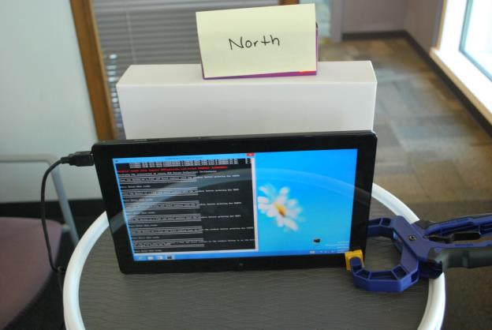
Figure 35 Advanced Orientation Sensor Test 6
Advanced Orientation Sensor Test 7
Place the device on a flat level surface with screen down and the windows button pointing due NORTH.
Figure 36 Advanced Orientation Sensor Test 7
Advanced Orientation Sensor Test 8
Place the device on a flat level surface with screen down and the windows button pointing due NORTH.

Figure 37 Advanced Orientation Sensor Test 8
Advanced Orientation Sensor Test 9
Place device on a flat level surface, screen up with the windows button pointing due SOUTH.
Figure 38 Advanced Orientation Sensor Test 9
Advanced Orientation Sensor Test 10
Hold the device vertically with the windows button on the side, left side on top, and the windows button pointing due EAST.
Figure 39 Advanced Orientation Sensor Test 10
Advanced Orientation Sensor Test 11
Place the device on a flat level surface with screen down and the windows button pointing due SOUTH.
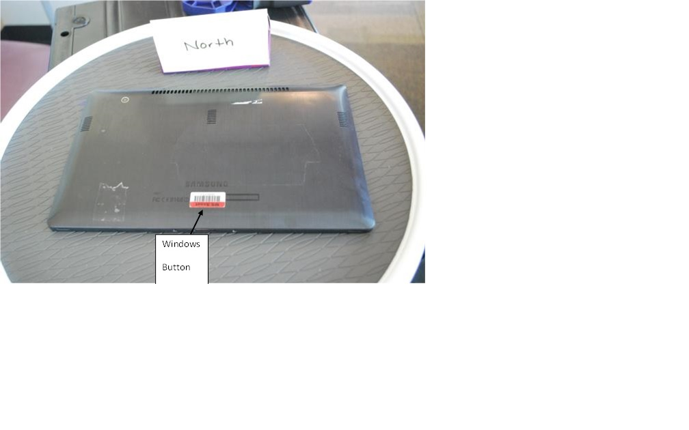
Figure 40 Advanced Orientation Sensor Test 11
Advanced Orientation Sensor Test 12
Hold the device vertically with the windows button on the side, left side on bottom, and the windows button pointing due WEST.
Figure 41 Advanced Orientation Sensor Test 12